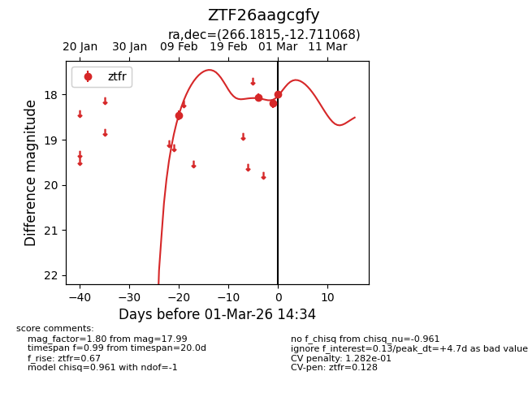
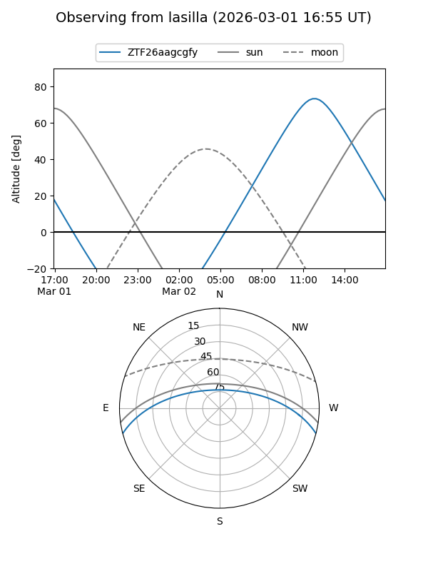
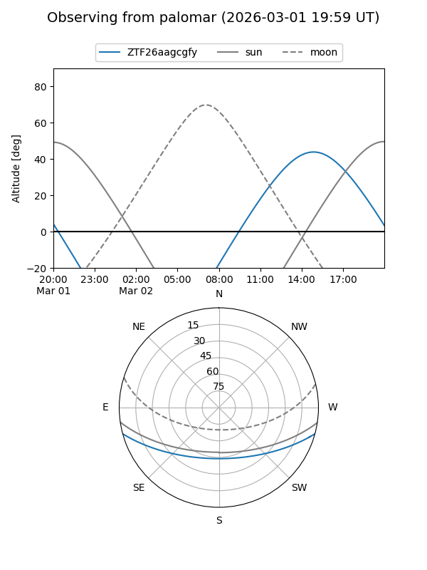
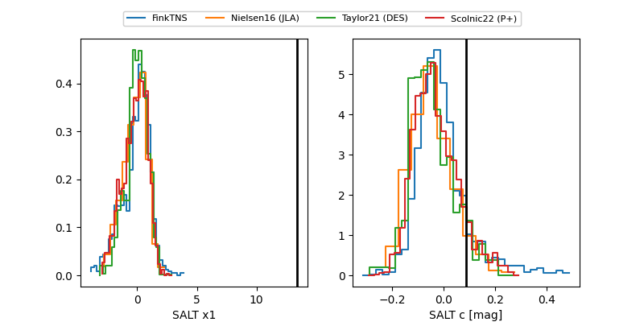

ZTF26aagcgfy
Target ZTF26aagcgfy at 2026-03-01 14:35
Aliases and brokers:
FINK: link
Lasair: link
ALeRCE: link
alt names
ZTF26aagcgfy (ztf,fink_ztf)
Coordinates:
equatorial (ra, dec) = 266.1815,-12.71107
equatorial (HMS+DMS) = 17:44:43.55,-12:42:39.85
galactic (l, b) = (13.8373,+8.55904)
Flags:
likely cv
Photometry:
last ztfr=17.99
4 ztfr detections
Lightcurve

Visibility


Additional plots
